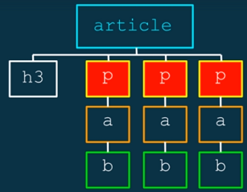

Estrutura baseada em heranças de tags:
<article>
<h3> </h3>
<p>
<a> <p> </p> </a>
</p>
<p>
<a> <p> </p> </a>
</p>
<p>
<a> <p> </p> </a>
</p>
</article>
No código acima:
Article possui filhos,
article a {
background: red;
} /*No código acima, o espaço entre o atributo siginifica herança, todo "a" que for herdeiro de "article" receberá a formatação em questão.*/
article p b{
background: red;
} /*Seleciona todo "b" que é descendente de "p" que é descendente de "article"*/
O sinal de maior > Significa filho direto:
article p > b{
background: red;
} /*Seleciona todo "b" que é filho direto de "p", no caso do nosso código, nenhum elemento é selecionado. */
article p > a{
background: red;
} /*Seleciona todo "a" que é filho direto de "p"*/
O sinal de + é utilizado para determinar que o próximo elemento imediatamente após o descrito será formatado:
article h3 + p{
background: red;
} /*Seleciona todo "p" imediatamente após o "h3", todo "p" que é irmão direto de "h3"*/
article p + p{
background: red;
} /*Seleciona todo "p" imediatamente após um "p", todo "p" que é irmão direto de "p"*/
O sinal tiu(~) seleciona todos os próximos irmãos, todos que vem após o elemento em questão, antes não!
article h3 ~ p{
background: red;
} /*Seleciona todo "p" que é irmão de "h3"*/

[Atributo]
a[title]{
color: red;
} /*Seleciona todo "a" que possui o atributo title*/
[Atributo=""]
img[alt=" "]{
background-color: red;
} /*Seleciona todo "img" que possui o atributo alt com o valor=" "*/
[Atributo^="valor"]
a[href="http"]{
color: red;
} /*Seleciona todo atributo que inicia com o valor descrito, todo href que inicia com http*/
[Atributo$="valor"]
img[src$=".png"]{
border-color: red;
} /*Seleciona todo atributo que termina com o valor descrito, todo src que termina com .png*/
:not()
:not(a){
...;
}
} /*Seleciona todo atributo que NÃO seja um link*/
P:not(.destaque){
...;
}
} /*Seleciona todo parágrafo que NÃO possua a classe .destaque*/
img:not([alt]){
display: none;
}
} /*Seleciona todo imagem que NÃO possua o atributo alt e a esconde, o que força o dev a colocar o atributo! ^^*/
Existem outros tipos, porém são menos comuns.